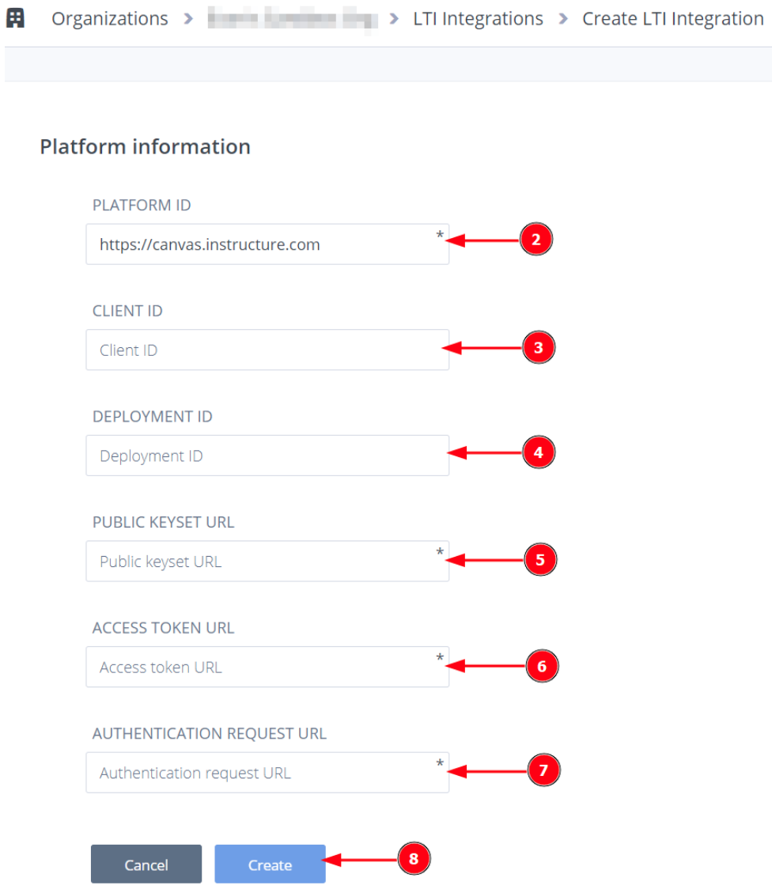

LTI 1.3 for Canvas¶
On this page, you will find detailed step-by-step guidelines to help you integrate your Canvas and Codio accounts and connect assignments between the two applications.
LTI version 1.3 improves upon version 1.1 by moving away from the use of OAuth 1.0a-style signing for authentication and towards a new security model, using OpenID Connect, signed JWTs, and OAuth2.0 workflows for authentication. For more information, see Learning Tools Interoperability Core Specification
The deep-linking URL is https://apollo.codio.com/lti/resource_selection.
Part 1: In Canvas - Create a Developer Key¶
The Canvas user who carries out these steps must be a system administrator.
Important
When copying links, please use the copy button adjacent to each link to ensure accuracy and prevent linking errors.
In Codio: 1. Click your username in the top-right corner, then select Organization from the menu. In the Organizations area, click the name of your organization. 2. Select the LTI Integrations tab. 3. Scroll down to the LTI Integration 1.3 section; you should see the following fields. Keep this page open. |
|
In Canvas: 4. Select Admin -> Developer Keys 5. Click on Developer Key and select +LTI key. |
|
6. Complete the Key Name, Title and Description
fields. Make sure to set the method to Manual Entry
7. From Codio, under LTI 1.3 Integration, copy the LTI URL and paste it into the Target Link URI field in Canvas. 8. From Codio copy the Initiate Login URL and paste it into the OpenID Connect Initiation URL. 9. Copy the Redirect URL and paste it into the Canvas Redirect URI field. |
|
10. In Canvas, change JWK Method to
Public JWK URL. 11. From Codio, copy the Keyset URL and paste it into the Public JWK URL field. |
|
12. Expand the LTI Advantage Services section and toggle
each field on. 13. Expand the Additional Settings section 14. Type "codio.com" in both the Domain and Tool Id fields. 15. Select the Privacy level as Public. |
|
16. Scroll down to the Placements field. You can add a placement
by starting to type the name and then selecting it when it appears.
Placements that should be included (remove any others):
Link Selection, Editor Button, Assignment Selection and Course Navigation.
|
|


17. Expand each of the following fields, and copy the static links below: Link Selection Select LtiDeepLinkingRequest Target Link URI: https://apollo.codio.com/lti/resource_selection Icon URL: https://static-assets.codio.com/dashboard/images/icons/favicon-16x16.da14ae918fd9bc3b.png |

Editor button Target Link URI: https://apollo.codio.com/lti/editor_button Icon URL: https://static-assets.codio.com/dashboard/images/icons/favicon-16x16.da14ae918fd9bc3b.png |
Assignment Selection Select LtiDeepLinkingRequest Target Link URI: https://apollo.codio.com/lti/resource_selection Icon URL: https://static-assets.codio.com/dashboard/images/icons/favicon-16x16.da14ae918fd9bc3b.png |
Course Navigation Target Link URI: https://apollo.codio.com/lti/course_navigation Icon URL: https://static-assets.codio.com/dashboard/images/icons/favicon-16x16.da14ae918fd9bc3b.png |


18. Click Save in bottom-right corner 19. You will be back at the list of developer keys. 20. Update State to: on 21. Copy the number in the Details column (for use in Parts 2 and 3) |
|

Part 2: Create an application in your course in Canvas¶
In Canvas:¶
1. Select an existing course or create a new course. Optional: create a test course called Codio Test Course before you do it with a production course. 2. In your course, go to Settings → Apps → + App 3. In Configuration Type, select: By Client ID 4. Paste number you copied in Part 1 into Client ID field 5. Submit → Install |

|
6. After you click install, click the gear icon by the tool you just created 7. Select Deployment ID 8. Copy the ID displayed, it will be used in Part 3 |

|
Part 3: Create an LTI configuration in Codio¶
In Codio:¶
1. In your org → LTI Integrations - Scroll down to LTI 1.3 Configurations - Click Add Integration |

|
Updating the fields in Platform Information Note: replace [CANVAS DOMAIN] with your institution's domain in steps 5–7. Remove the brackets. Example: https://yourinstitution.instructure.com/api/lti/security/jwks 2. Platform ID: https://canvas.instructure.com 3. Client ID: copied from Developer Keys at end of Part 1 4. Deployment ID: copied in Part 2 5. Public Keyset URL: https://[CANVAS DOMAIN]/api/lti/security/jwks 6. Access Token URL: https://[CANVAS DOMAIN]/login/oauth2/token 7. Authentication Request URL: https://[CANVAS DOMAIN]/api/lti/authorize_redirect 8. Click Create |
 |
Part 4: Adding a resource¶
In Canvas:¶
|
1. Go to Assignments in your course, then click
Assignment. 2. Give your assignment a name. 3. Select a number of points. 4. Under Submission Type, select External Tool. 5. Select Find. Note: Do not paste the LTI Integration URL directly into the Canvas External Tool URL field when creating an assignment. Instead, use the deep link “Find” flow (recommended) or follow the “Connect by LTI Integration URL” method described below. 6. Select the tool created in Part 1.
7. Select Save at bottom of the page |

|
Note
These settings are not final and can be edited in Canvas at a later time.
Part 5: Customizing Iframe Width/Height¶
You can customize the width and height of the Codio window embedded in Canvas. The default width is 1000 pixels and height is 800 pixels; change those values if needed and press Save Changes.

{kind=link}
Important Notes on Course Copy in Canvas:¶
- In Canvas, once you copy the course, you must enter a unique SIS ID in Course Settings.
An SIS ID that is different from the Blueprint Course (Canvas’ Parent Course) is required for Codio to spawn a corresponding child course.
An SIS ID is optional for the Blueprint Course.
Connecting/mapping assignments in Canvas¶
There are also a number of ways you can connect/map assignments. Check out the following videos to see the option that best suits you.